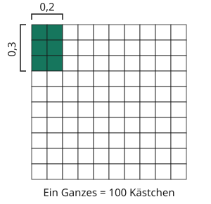

Dezimalzahlen multiplizieren und dividieren
Mit einem KI-Tutor lernen
Ein KI-Tutor erklärt dir diese Seite und hilft dir bei den Übungen. Wähl deinen Assistenten:
Mit Claude öffnen Mit ChatGPT öffnen Mit Mistral Vibe öffnen
Du nutzt dein eigenes Konto beim Anbieter. Der Assistent ist kein Angebot von lernapps.net: lernapps liefert nur Inhalte und Übungen. Die Wahl gilt für alle Seiten, nur auf diesem Gerät.
Malnehmen und Teilen: Was macht das Komma?
Wie viel sind drei Zehntel von zwei Zehnteln? Und wie viele Portionen von 0,25 Litern passen in 0,75 Liter? Bei diesen Fragen multiplizierst oder dividierst du. Die beiden Rechenarten werden hier getrennt erklärt. Das Komma steht jeweils an der Stelle, die zu den Größen passt.
Anschaulich erklärt
Mal: Zehntel mal Zehntel ergeben Hundertstel
Erinnerst du dich an das Rechteckmodell für Brüche? Das Quadrat unten ist ein Ganzes. Seine Breite und Höhe sind jeweils in zehn gleiche Abschnitte geteilt. Zwei Spalten entsprechen der Breite 0,2, drei Zeilen der Höhe 0,3. Ihr gemeinsames Rechteck enthält sechs der hundert Kästchen: 0,06. So erklärt sich, warum du die Nachkommastellen beider Faktoren zusammenzählst.

Breite 0,2 · Höhe 0,3 = sechs Hundertstel Fläche.
Quelle: eigene Zeichnung. Lizenz: CC-BY-4.0.Geteilt: dieselbe Rechnung in einer anderen Einheit
In 0,75 Litern sollen Portionen von je 0,25 Litern gezählt werden. In Litern wirken die Zahlen klein. Rechne beide Mengen in Zentiliter um: Es sind 75 Zentiliter und Portionen von je 25 Zentilitern. Die Anzahl der Portionen ändert sich durch die neue Einheit nicht. Du hast beide Zahlen mit 100 multipliziert. Genau deshalb darfst du bei einer Division das Komma in BEIDEN Zahlen gleich weit verschieben.
| Einheit | Menge insgesamt | Menge pro Portion |
|---|---|---|
| Liter | 0,75 | 0,25 |
| Zentiliter | 75 | 25 |
Zwei Beispiele, Schritt für Schritt
Multiplikation: 0,2 · 0,3
- Rechne zunächst 2 · 3 = 6.
- Beide Faktoren haben eine Nachkommastelle, zusammen also zwei.
- Setze das Komma so, dass sechs Hundertstel entstehen: 0,06. Die Null vor der 6 ist nötig.
- Probe am Bild: Sechs von hundert Kästchen sind tatsächlich 0,06.
Division: 0,75 : 0,25
- Die zweite Zahl hat zwei Nachkommastellen. Multipliziere BEIDE Zahlen mit 100.
- Die Rechnung lautet nun 75 : 25.
- Drei Portionen zu je 25 ergeben 75. Also ist das Ergebnis 3.
- Probe: 3 · 0,25 = 0,75.
Üben
Übung
Lösung
0,06 richtige Antwort
0,2 sind zwei Zehntel und 0,3 sind drei Zehntel. Ein Zehntel mal ein Zehntel ist ein Hundertstel. Zwei mal drei ergibt sechs Hundertstel: 0,06.
0,6
Sechs Zehntel wären zu viel. Zehntel mal Zehntel ergeben Hundertstel.
0,5
Das ist die Summe, nicht das Produkt.
0,2 sind zwei Zehntel und 0,3 sind drei Zehntel. Ein Zehntel mal ein Zehntel ist ein Hundertstel. Zwei mal drei ergibt sechs Hundertstel: 0,06.
Mehr dazu:
Übung
Drei Beispielaufgaben, jede mit ihrer Lösung:
Aufgabe Nr. 1
Multipliziere 1,5 · 0,6. Gib das Ergebnis als Dezimalzahl an.
Tipp
Multipliziere zunächst ohne Komma. Beide Faktoren haben je eine Nachkommastelle.
Lösung
- Ohne Komma rechnest du 15 · 6 = 90.
- Die beiden Faktoren stehen jeweils für Zehntel. Das Ergebnis zählt daher Hundertstel: 0,9. Endnullen nach dem Komma dürfen entfallen.
Richtige Antwort: 0,9
Aufgabe Nr. 2
Multipliziere 0,4 · 0,5. Gib das Ergebnis als Dezimalzahl an.
Tipp
Multipliziere zunächst ohne Komma. Beide Faktoren haben je eine Nachkommastelle.
Lösung
- Ohne Komma rechnest du 4 · 5 = 20.
- Die beiden Faktoren stehen jeweils für Zehntel. Das Ergebnis zählt daher Hundertstel: 0,2. Endnullen nach dem Komma dürfen entfallen.
Richtige Antwort: 0,2
Aufgabe Nr. 3
Multipliziere 0,3 · 0,4. Gib das Ergebnis als Dezimalzahl an.
Tipp
Multipliziere zunächst ohne Komma. Beide Faktoren haben je eine Nachkommastelle.
Lösung
- Ohne Komma rechnest du 3 · 4 = 12.
- Die beiden Faktoren stehen jeweils für Zehntel. Das Ergebnis zählt daher Hundertstel: 0,12. Endnullen nach dem Komma dürfen entfallen.
Richtige Antwort: 0,12
Übung
Lösung
Beide Zahlen werden mit 100 multipliziert; ihr Verhältnis bleibt gleich. richtige Antwort
Multiplizierst du beide Zahlen einer Division mit derselben positiven Zahl, bleibt das Verhältnis gleich. 0,75 : 0,25 wird mit dem Faktor 100 zu 75 : 25. Es passen drei Portionen hinein.
Nur bei der ersten Zahl darf das Komma verschoben werden.
Dann würde sich das Ergebnis ändern. Beide Zahlen müssen denselben Faktor bekommen.
Man darf die Kommas bei jeder Rechnung einfach weglassen.
Die Zahlen müssen mit derselben Zehnerpotenz multipliziert werden. Unterschiedlich weit verschieben verändert das Verhältnis.
Multiplizierst du beide Zahlen einer Division mit derselben positiven Zahl, bleibt das Verhältnis gleich. 0,75 : 0,25 wird mit dem Faktor 100 zu 75 : 25. Es passen drei Portionen hinein.
Mehr dazu:
Übung
Drei Beispielaufgaben, jede mit ihrer Lösung:
Aufgabe Nr. 1
Dividiere 1,8 : 0,3. Gib das Ergebnis an.
Tipp
Mache die zweite Zahl ganzzahlig. Vergrößere dazu beide Zahlen um denselben Faktor.
Lösung
- Multipliziere beide Zahlen mit 10. Aus 1,8 wird 18, aus 0,3 wird 3.
- Die Anzahl gleich großer Portionen bleibt gleich. Rechne 18 : 3 = 6.
Richtige Antwort: 6
Aufgabe Nr. 2
Dividiere 2,8 : 0,4. Gib das Ergebnis an.
Tipp
Mache die zweite Zahl ganzzahlig. Vergrößere dazu beide Zahlen um denselben Faktor.
Lösung
- Multipliziere beide Zahlen mit 10. Aus 2,8 wird 28, aus 0,4 wird 4.
- Die Anzahl gleich großer Portionen bleibt gleich. Rechne 28 : 4 = 7.
Richtige Antwort: 7
Aufgabe Nr. 3
Dividiere 0,75 : 0,25. Gib das Ergebnis an.
Tipp
Mache die zweite Zahl ganzzahlig. Vergrößere dazu beide Zahlen um denselben Faktor.
Lösung
- Multipliziere beide Zahlen mit 100. Aus 0,75 wird 75, aus 0,25 wird 25.
- Die Anzahl gleich großer Portionen bleibt gleich. Rechne 75 : 25 = 3.
Richtige Antwort: 3